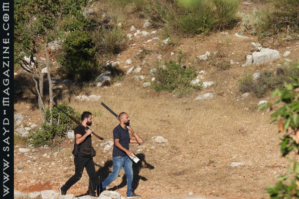
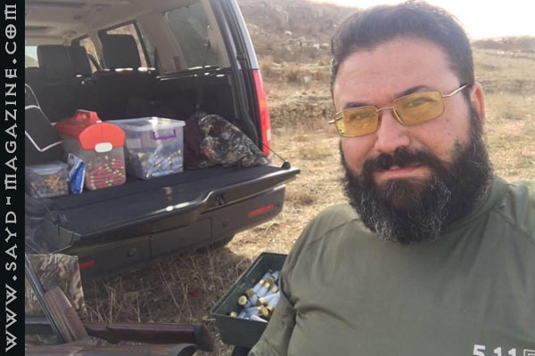
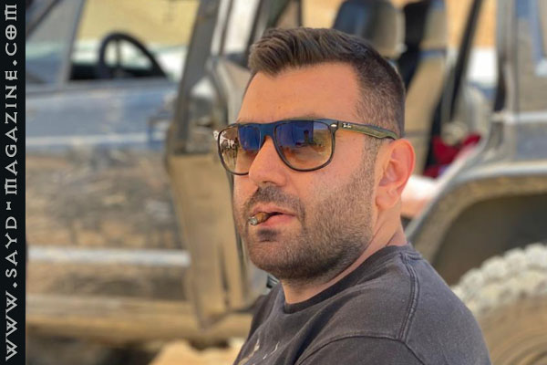
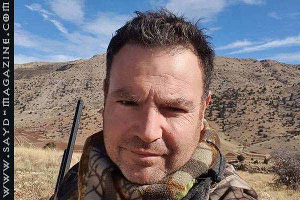
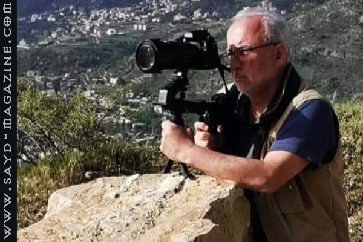
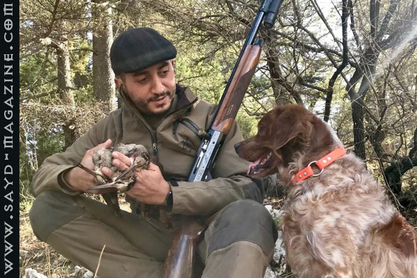
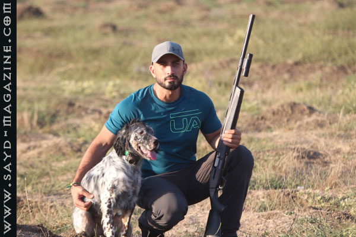

بعد أن تسبّبت الدولة بمنع صيد جائر لمدة 20 سنة دون تنظيم، مُنتجة بذلك شريحة كبيرة من القواصين، يقتلون كل ما يطير وبطرق إبادة لا بعقلية صيد مستدام ينسجم مع هواية الملوك.
وبعد أن فتح الموسم عدة سنوات دون التشدُّد في التطبيق، عمدت الدولة إلى إقفال الموسم السنة الفائتة- وحتى هذه السنة رغم دخول موسم الصيد تاريخه الطبيعي- بطريقة العقاب الجماعي، فساوت الصياد بالقواص وهذا ما سهل للقواصين عبثهم، بدل أن تستفيد الدولة من عين الصياد الحقيقي الساهر على حماية الهواية والطبيعة، والذي شكل خلال السنوات الأخيرة قوّة حماية من خلال التبليغ عن مخالفات القواصين...
مجلة "صيد" تحدثت إلى بعض الصيادين حول هذا الموضوع.


الوضع غير مقبول، فوزير البيئة وعد الصيادين وكانت الحجة أن لا مجلس أعلى للصيد البري، وأعتقد أن حوله مجموعة توجهه لعدم فتح الموسم. أنا من جهتي أقول هذا خطأ فادح.
لو تمّ فتح موسم الصيد كانت الدولة ستؤمن مدخولاً، وستنظّم عملية الصيد من خلال التشدد، فالآن كل من يريد أن يصطاد يقوم بذلك دون أية مسؤولية وغير آبه بقرارات الوزير، وليس هناك تأمين بالشركات حين يكون الموسم مُقفلًا لا تغطي أية أضرار.
هناك مجلس أعلى ولكنه مُسيَس والمسؤول عن الصيادين يجب ألا يكون تاجر أسلحة، إنما صياد لكي يتكلّم باسم الصيادين الذين يمثلون نوادي الرماية.
كل التأثيرات سلبية وإذا غضّت الدولة النظر، فالفوضى سيّدة الموقف ولا من توعية، وجماعة البيئة لا نسمع أصواتهم إلاّ ضدّ الصيد فقط، لا أحد يتحدّث عن النفايات ولا عن قطع الأشجار والحرائق.
بلا قرار ولا تنظيم فالصياد والقواص متساويان.
عقوبة جماعية لنا، وأرى أن دولتنا لا تحب النظام والقانون، فعوضًا عن تطبيق النظام يهربون إلى المنع.
لا أعتقد أن لا فتح لموسم الصيد.


ما حدث ويحدث ظلم كبير بحق الصياد وعقوبة جماعية لا تفرق بين صياد وقواص.
إن الصياد هو المتضرر الأكبر من منع الصيد، لأن القواص في الأساس لا يعني له القانون، وهذا ما يُشجّعه أكثر على المخالفة كردة فعل، وقد رأينا المجازر التي حدثت ردًّا على قرار منع الصيد.
القواص شوّه الصورة الحقيقية للصياد وما زال، ومنع الصيد "زاد الطين بلّه".
المجلس الأعلى لم يحرك ساكنًا، وعليه مسؤولية كبيرة تجاه الصياد والطبيعة، ويجب أن ينسّق سريعًا مع الوزارة ويتم فتح الموسم.
لقد حققنا كصيادين حماية ممر الهجرة فوق كسروان بنسبة كبيرة جدًّا، خصوصًا فوق إغبة وشحتول على مدى خمس سنوات.


حين أرى التخبط والالتباس يحكمان عمل وزارة البيئة، كإدارة عامة تُعنى بتنظيم الصيد البري في لبنان بموجب القانون ٥٨٠، فإنني كصياد، وكعضو اتحاد مجموعات الصيد البري في لبنان، لا أشعر بالطمأنينة ولا بالتفاؤل تجاه مستقبل الهواية، وحسن تنظيمها، والأمل بترسيخ مبادئ الصيد البيئي. وأتمنى على معالي الوزير وضع برنامج واضح يساعدنا كصيادين ملتزمين على نشر المبادئ البيئية بين زملائنا الصيادين.
لا يخفى على أحد، أنه تم استيحاء المجلس الأعلى للصيد البرّي ودوره من القانون الفرنسي، ولكن مكان دور الصياد الذي حفظته القوانين الفرنسية في المجلس الأعلى من أجل ضمان نجاح عمل المجلس، ضاع ما بين الترجمة وما بين التطبيق.
لقد تمّ حذف الشرط الوارد في القوانين الفرنسية عن ألا يقل عدد الصيادين الممثلين في المجلس الأعلى عن الثلث، وتمّ استبداله بمقعد واحد، وهذا المقعد اليتيم تم إهداؤه إلى جمعية خاصة احتكرت التمثيل، والآن كما رأينا من خلال التطبيق السيئ، تمّ حرمان الصياد تمامًا من التمثيل، وذلك عبر تسمية أحد أهم تجّار أسلحة الصيد من قبل الجمعية.
نحن كـ"اتحاد مجموعات الصيد البري في لبنان"، نرفض أن يكون للصياد مقعد واحد، ونرفض احتكار هذا المقعد، ونرفض كل التصرّفات إزاءه سواءً كانت رهنًا أو بيعًا أو شراءً أو إيجارًا أو إهداءً، ونعتبر أن معالي وزير البيئة هو في وضع المقصّر عن تأمين حسن تطبيق القوانين، لا سيما تعيين أعضاء المجلس الأعلى للصيد البري، وهذا ما سيُبقي الصياد على جبل، وكل الإدارة والمجلس في وادٍ آخر.
لقد جاء القانون ليأمر وزارة البيئة بتنظيم قطاع الصيد، وتبقى الغاية من القوانين هي تأمين المصلحة العامة وحماية النظام العام. وهنا أسأل: هل أمّن قرار منع الصيد المصلحة العامة وحمى النظام العام؟ أم أن قرار المنع جاء ليقطع أية علاقة بين الصياد والوزارة؟ وليفلت الحبل على غاربه؟ وهل كان من الحكمة بشيء هدم كل ما تمّ بناؤه من قبل الوزراء السابقين؟ وهل أصلًا كان من احتمال أن يتم فرض منع الصيد في أسوأ ظروف اقتصادية ونقدية ومصرفية واجتماعية وسياسية يمرّ بها لبنان؟ ألم يكن من الأجدى حفظ ماء وجه الوزارة وهيبة الدولة والعلاقة مع الصيادين (حبل الرُخص) بدلًا من قطعها وفضح واقع الدولة بما يشجع الناس على سلوك نهج مخالفة القوانين؟
إن الصيد الجائر جريمة لا تغتفر يجب المحاسبة عليها والعمل على محاربتها حتى القضاء عليها ولكن هل قرار منع الصيد هو الذي يشكل الحساب، وهل قرار منع الصيد أوقف الصيد الجائر؟
إن قرار المنع جاء ليطال الصياد الملتزم الذي يحترم القانون ويحرص على ممارسة هوايته ضمن الأطر التي رسمها القانون ٥٨٠، وإن قرار المنع، جاء "ليضيّع الطاسة"، إن صحّ التعبير، وليستغلّ الصياد الجائر هذا الوضع الملتبس، فيتنكّر في زيّ صياد ملتزم، لا بل انّ قرار المنع عاقب الصياد البيئي وكافأ الصياد المخالف في مساواته بينهما، والأخطر من كل ذلك، أنه دفع الصيادين الحقيقيين، وبسبب تعلّقهم من جهة بهذه الهواية حتى العشق، وبسبب إحساسهم بالغبن الذي لحق بهم والتنكُّر لالتزامهم بالترخيص على مرّ السنين السابقة فأحسّوا كأنّهم الزوج المخدوع. كل ذلك دفع الكثير منهم إلى مخالفة القانون وممارسة الصيد، وطبعًا أقصد الصيد بحسب المعايير التي تمّ وضعها سابقًا، من أنواع وأعداد للطرائد المسموح صيدها.
بالخلاصة، قرار منع الصيد علّم الناس الحرام وأدخلهم في زواريب لم يعتادوا دخولها أو التواجد فيها، وفي هذه المناسبة أدعو معالي وزير البيئة إلى مراجعة قرار منع الصيد والرجوع عنه، لِما ألحقه من أضرار حتى الآن.


إذا كان الهدف عدم فتح الموسم لسنتين مُتتاليتين لأجل حماية الطيور والبيئة، فهو مفهوم خاطئ. فالدول الحضارية التي نظَّمت الصيد حَمَت الطبيعة أكثر. وأريد أن أسأل: كيف يمكننا أن نقوم بتوعية الصياد الجائر وحثّه على إصدار رخصة والالتزام بالقانون والصيد ممنوع؟ وهو في الأساس لا يتأثّر لأنه يعتبر نفسه غير معني، والتوعية تعطي نتيجة حين يكون الصيد مسموحًا.
هناك عشرات الألوف تعتاش من هواية الصيد مما يحرّك العجلة الاقتصادية، خصوصًا في الأرياف، فمنع الصيد يؤذي كل هذه الشريحة التي تستفيد من الموسم.
يجب أخد رأي المجلس الأعلى للصيد البرّي بهذا القرار، إذ ليس هناك منطق أن جهة واحدة تتخذ القرار وبدون أي تعليل علمي لمنع الصيد.
الذين يبيدون الطيور هم ليسوا من حملة الرخص، بل صيادو الشباك وصيد الليل والدبق وغيرهم، وكل هذا لا يُسمّى صيداً.
لماذا لا تكافح الوزارة الصيادين الجائرين الذين ينشرون جرائمهم على وسائل التواصل الاجتماعي؟ فهم لا يحتاجون إلى جهد وإلى محروقات فقط يُراقبون المخالفين.


أرى وضعنا في خانة الصفر...
انتظرنا خمسة عشر عامًا لنرى أخيرًا الوزارة تتخذ الخطوة الأولى باتّجاه قانون صيد عادل وعصريّ، وها نحن اليوم نعود خطوتين إلى الوراء.
عدم الجدّية في مقاربة الصيد البرّي للأسف لا يقتصر على أداء الوزارة اليوم، وإنّما منذ افتتاح موسم ٢٠١٧، ومع انخفاض أعداد الرخص من 16,000 لما دون الـ٦٠٠٠ رخصة عام ٢٠١٩، ألا وهو نتيجة إهمال وتقصير في المتابعة.
لا الأزمة التي تمرّ بها البلاد ولا الأوضاع الاقتصادية كما صرّح الوزير سابقًا تبرّر القرارات العشوائية أو اللاقرار في هذه الحالة.
قد يطول الحديث عن صوابيّة تشكيل المجلس وتعيين أعضائه بشكله الحالي، فبعض الوزارات الممثّلة ليست معنية مباشرةً بالمهامّ الموكلة إليها.
دور المجلس كما ينصّه القانون تحديد موسم الصيد، تصنيف الطرائد، والسعي لإقامة مراكز لتربية الطرائد وغيرها من الطيور أو الحيوانات لإطلاقها في البرية فيما بعد، وهذا يتطلّب صيّادين وخبراء بيئيين يعملون في اتّجاهٍ واحدٍ نحو رؤيةٍ موحّدة.
كان من المفترض أن يكون المجلس الأعلى للصيد البرّي الحريص الأول على حماية وتطوير الهواية، وقد يكون اليوم في بعض أعضائه متواطئًا أو مقصّرًا في الحدّ الأدنى.
منذ العام ١٩٩٥ للـ٢٠١٦ اختبرنا الوجهين المختلفين لمنع الصيد بين التشدّد والتغاضي، والوجهان أوصلا الهواية للحضيض. فالأوّل ساهم بابتداع طرق احتيال على القانون والطير سويّةً، فانتشرت الشباك على الأشجار على الأسطح وصيد الليل والدّبق وغيرها من الأساليب الإجرامية. أمّا الثاني، الذي أتى نزولًا عند رغبة تجار الأسلحة والذخائر، فقد أنشأ جيلًا من هواة القتل لم يميّز بين الطير والطريدة أو بين موسم الصيد والتكاثر.
في المحصّلة، ما زلنا نحصد لليوم النتائج الكارثية لذاك القرار، والمنع الحالي لن تكون نتائجه أقلّ كارثية.
رغم المجهود الكبير الذي قمتم به في السنوات الأخيرة للتمييز بين الصياد والقوّاص، ما زالت الصورة واحدة في أذهان البعض، إما عن جهل وإمّا عن تواطؤ، وهنا أقصد بعض الجمعيات البيئية وبعض المستفيدين.
وكما ذكرت سابقًا، لم ينجح قرار المنع يومًا في منع الصيد الجائر بل على العكس، ساهم في انتشاره. وفي النتيجة نجد الصياد ملتزمًا بالقانون ويطبّق الرقابة الذاتيّة، بينما هاوي القتل لا يردعه رادع، وتبقى الطبيعة الخاسر الأكبر.
قرار منع الصيد أو عدم فتحه هذه السنة لغاية الآن هو قرار مُجحف بحق الصياد، وهو سيُشكل ضررًا على الشريحة التي تعتمد على مواسم الصيد لتعتاش من محلات بيع الخرطوش، إلى الذين يؤجّرون بيوتهم للصيادين في الموسم، والذين يؤمّنون الطعام لهم أيضًا ويبيعون المونة.
وستزداد نسبة القتل مع اعتماد وسائل غير شرعية كالشباك والدبق.
هناك دور يجب أن يمارسه المجلس الأعلى للصيد البري، بمطالبته فتح الموسم، ولكن القرار الأول والأخير هو للوزير.
هناك تأثيرات جانبية، فمنذ المنع في التسعين أصبحنا نرى شريحة تُمارس المخالفات بطرق عشوائية، خصوصًا الناس الذين لا صلة لهم بالصيد، إنما بتجميع اللحم، وهذا ما جعل الناس غير آبهين بالقانون بسبب غياب التنظيم.
القرار مُضر بحق الصيادين ومفيد للقواصين، فالصياد سيلتزم منزله وهم يسرحون ويمرحون لأنهم أصلًا لا يحترمون القانون.
المطلوب التشدد بتطبيق القانون ويجب أن يكون الصيادون على الأرض ليساهموا بالتوعية، ويحدوا من ضرر القواصين ويقوموا بدورات توعية في المدارس والجامعات.


قرار منع الصيد أو عدم فتحه هذه السنة لغاية الآن هو قرار مُجحف بحق الصياد، وهو سيُشكل ضررًا على الشريحة التي تعتمد على مواسم الصيد لتعتاش من محلات بيع الخرطوش، إلى الذين يؤجّرون بيوتهم للصيادين في الموسم، والذين يؤمّنون الطعام لهم أيضًا ويبيعون المونة.
وستزداد نسبة القتل مع اعتماد وسائل غير شرعية كالشباك والدبق.
هناك دور يجب أن يمارسه المجلس الأعلى للصيد البري، بمطالبته فتح الموسم، ولكن القرار الأول والأخير هو للوزير.
هناك تأثيرات جانبية، فمنذ المنع في التسعين أصبحنا نرى شريحة تُمارس المخالفات بطرق عشوائية، خصوصًا الناس الذين لا صلة لهم بالصيد، إنما بتجميع اللحم، وهذا ما جعل الناس غير آبهين بالقانون بسبب غياب التنظيم.
القرار مُضر بحق الصيادين ومفيد للقواصين، فالصياد سيلتزم منزله وهم يسرحون ويمرحون لأنهم أصلًا لا يحترمون القانون.
المطلوب التشدد بتطبيق القانون ويجب أن يكون الصيادون على الأرض ليساهموا بالتوعية، ويحدوا من ضرر القواصين ويقوموا بدورات توعية في المدارس والجامعات.